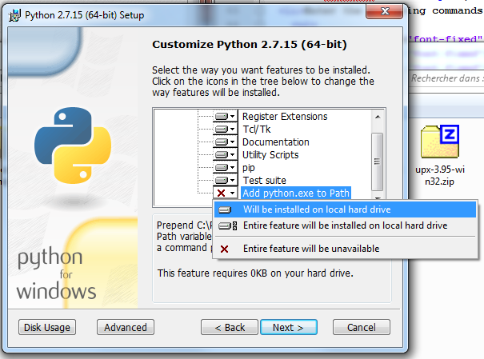

This section explains the requirements needed for DreamSDK.
DreamSDK doesn't require any external components to work properly. However, it may use the following external components if detected:
These components are not embedded in the DreamSDK package so they need to be installed separately, before installing DreamSDK itself.
All of these components should be available in the PATH environment variable. You can verify that by following this simple procedure:
As you might see on the screenshot above, all these 4 external components were detected in the PATH environment variable.
If at least one of them prints an incorrect message like Bad command or filename, then you should (re)install the problematic component, and please don't forget to check the PATH option when asked!
Note: You may install all these components in 64-bit form if you want to, except Python which should be the 32-bit release if you want to enable Python extensions in GDB for SuperH.
Git is a well-known source control software. It's used for retrieve all KallistiOS repositories and components.
If Git isn't installed, you won't be able to use the online KallistiOS repositories, so it's very recommended to install at least Git. In that case, only the offline repositories, which are embedded in the DreamSDK installer, will be available.
Python is a powerful scripting language engine. It's used by DreamSDK to mainly install KallistiOS Ports and also in the GNU Debugger (GDB) for SuperH.
The better Python version required for DreamSDK is the 32-bit version, as the GNU Debugger (GDB) for SuperH is a 32-bit program, so if you are interested about enabling Python extensions for GDB, you should install Python 32-bit.
To be clear, if you aren't interested about Python extensions in GDB, you may install any version of Python. Otherwise, a 32-bit Python release is necessary.
Hopefully, If you want a 64-bit Python and as well a 32-bit Python to enable GDB extensions too, then follow the procedure:
Now, your 64-bit Python is your default Python runtime, but the 32-bit is also available when needed for the the GNU Debugger (GDB). So in that way you may enable Python extensions for GDB.
The Subversion Client (SVN) is only used for installing one KallistiOS Port: libtremor. If SVN isn't available, then you won't be able to use this particular library in your projects.
Ruby is a scripting language that may be used for Dreamcast programming.
Please note, the Sega Dreamcast support is very experimental. You may install the RubyInstaller package to enable it in DreamSDK. For your information, the implementation used here is mruby.
You may read more information here.
If you want to use the Code::Blocks IDE, be sure to install the 17.12 or 20.03 release versions, ideally before installing DreamSDK.
You need to start the Code::Blocks IDE at least for once for each users who will want to use the DreamSDK package within Code::Blocks. This is necessary to create some files that will be updated by the DreamSDK package.
You may learn more about Code::Blocks IDE integration here.
For the Windows Operating System (OS), Windows XP Service Pack 3 or later is required.
Of course, you can use DreamSDK on modern Windows, if you plan to develop for your Dreamcast and execute your programs on emulators or even use Dreamcast Tool. DreamSDK is fully compatible with Windows 10!
Please note, the DreamSDK package use only 32-bit applications, so it may be installed on 32-bit or 64-bit systems.
If you want to install DreamSDK on Windows XP, please pay attention to the external components version you have. The Windows XP support was dropped almost everywhere, the reason why DreamSDK supports that obsolete OS is the fact that the Sega Dreamcast is a legacy system released back in 1998; so some useful utilities were made for this operating system (or more exactly, for Windows NT which is older!). That said, if you want to install DreamSDK on Windows XP Service Pack 3, please use these versions:
In my personal case, I have a legacy workstation (powered by a Pentium 4) dedicated to the Sega Dreamcast environment running Windows XP. This explains also the choice of using the legacy MinGW/MSYS environment instead of the modern (and better) MinGW-w64/MSYS2 environment, as they officially dropped Windows XP support.
In order to install the DreamSDK environment on your computer, it's better to have an active Internet connection.
This is useful as the KallistiOS libraries will be downloaded at the installation time.
If you don't have any Internet connection, you may use the embedded KallistiOS libraries in the package, but in this case, the Update feature of the DreamSDK Manager will be altered. Later, you will have the possibility to switch back online directly from the DreamSDK Manager.